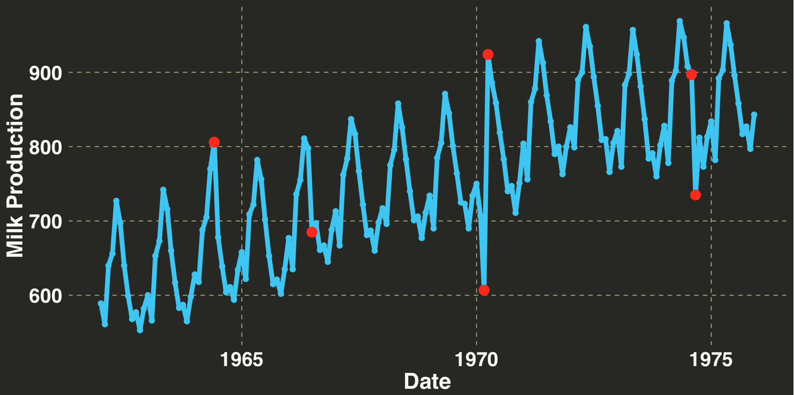
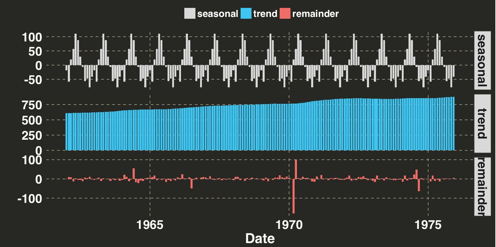
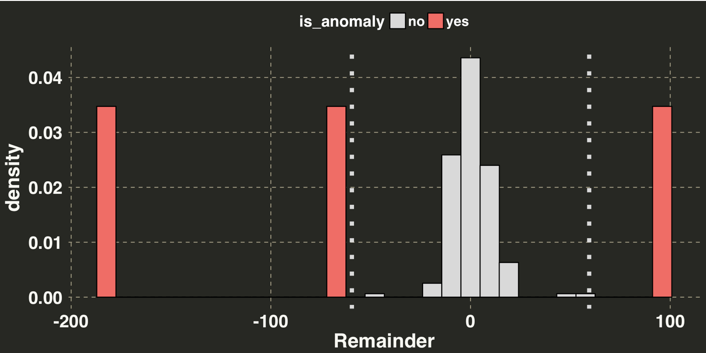
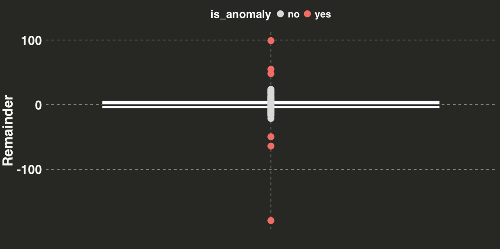
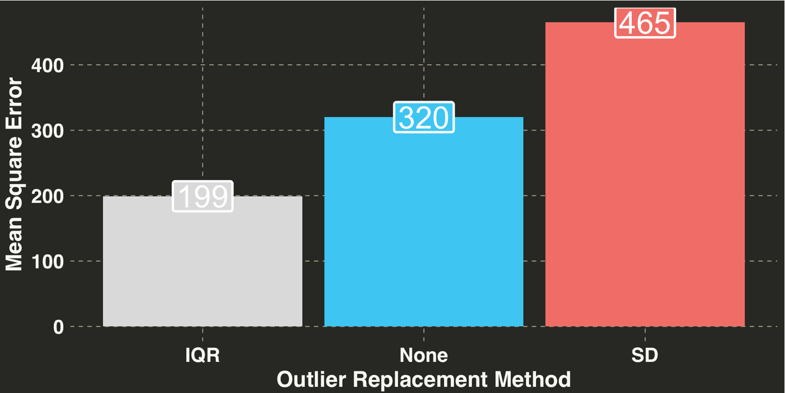
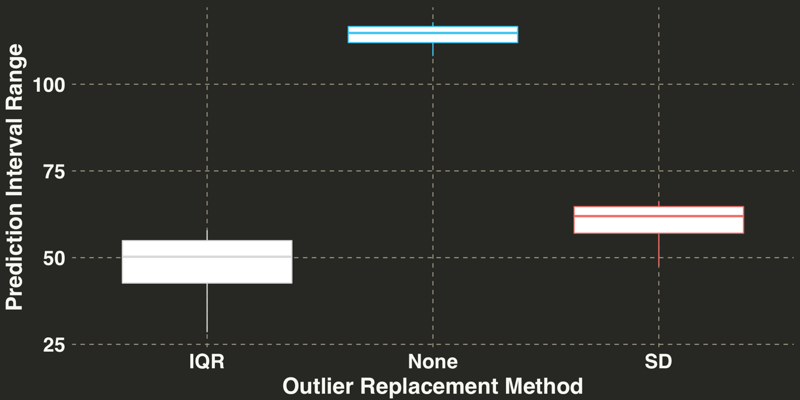

This post covers a straightforward approach to detecting and replacing outliers in time series.
This post will discuss outliers in the context of time-series forecasting. While there are a number of definitions for an outlier, I generally think of an outlier as the following: An unexpected event that is unlikely to happen again, or an Additive Outlier (see here for an extensive list of different types of outliers). For example, website traffic drops precipitiously because of a server fire or insurance claims spike because of an unprecedented, 500-year weather event. Both of these events can be considered as random occurences that (we hope) are unlikely to occur again, or at least do not occur at a regular cadence. Yet if you were attempting to predict future website traffic or understand the seasonal patterns of insurance claims, the aforementioned events may greatly impact our forecast. Thus there are two main reasons for conducting an outlier analysis prior to generating a forecast:
This post will cover the use of seasonal-decomposition to isolate errors that cannot be explained as a function of trend or seasonality. We’ll then discuss two simple, commonly used approaches for identifying outliers, followed by a brief overview of how to replace outliers with more sensible values. Finally we’ll test and see how including or excluding outliers affects the accuracy of our forecasts as well as the width of our prediction intervals. These questions will be explored within the context of monthly milk production from 1962-1975, where the value for each month represents the pounds of milk produced per cow (Riveting stuff, right?).
The data for this post is located here. Let’s bring it into R and have a quick look.
library(dplyr)
library(artyfarty)
library(ggplot2)
library(forecast)
library(reshape)
library(knitr)
wd = "path_to_your_data"
fn = "monthly-milk-production-pounds-p.csv"
setwd(wd)
df = read.csv(fn)
names(df) = c("Month", "Milk_Production")
df$Month = as.Date(paste(df$Month, "01", sep = "-"),
format = "%Y-%m-%d")
Now that we have our time series dataframe, let’s introduce six outliers into our time series. I picked these data points and their values at random.
df$Milk_Production[30] = df$Milk_Production[30] + 70
df$Milk_Production[55] = df$Milk_Production[55] - 50
df$Milk_Production[99] = df$Milk_Production[99] - 200
df$Milk_Production[100] = df$Milk_Production[100] + 100
df$Milk_Production[152] = df$Milk_Production[152] + 30
df$Milk_Production[153] = df$Milk_Production[153] - 80
outlier_df = df[c(30, 55, 99, 100, 152, 153),]
Let’s examine what our time series looks like. The red points indicate the outliers we just introduced.
color_values = c("#D9D9D9", "#33C5F3", "#F16C62", "#A8CE38", "#FCB51E", "#F92672")
my_plot_theme = function(){
font_family = "Helvetica"
font_face = "bold"
return(theme(
axis.text.x = element_text(size = 18, face = font_face, family = font_family),
axis.text.y = element_text(size = 18, face = font_face, family = font_family),
axis.title.x = element_text(size = 20, face = font_face, family = font_family),
axis.title.y = element_text(size = 20, face = font_face, family = font_family),
strip.text.y = element_text(size = 18, face = font_face, family = font_family),
plot.title = element_text(size = 18, face = font_face, family = font_family),
legend.position = "top",
legend.title = element_text(colour = "white", size = 16,
face = font_face,
family = font_family),
legend.text = element_text(colour = "white", size = 14,
face = font_face,
family = font_family)
))
}
ggplot(df, aes(x = Month, y = Milk_Production)) +
geom_point(size = 2, color = color_values[2]) + geom_line(size = 2, color = color_values[2]) +
theme_monokai_full() +
my_plot_theme() +
scale_color_manual(values = c(color_values[1:2])) +
theme(legend.title = element_blank()) +
xlab("Date") + ylab("Milk Production") +
geom_point(data = outlier_df, colour = "red", size = 4)

Let’s break our time series out into three seperate components: Seasonal, Trend, and Remainder. The seasonal and trend are structural parts of the time series that we can explain, while the Remainder is everything that’s left over that we cannot explain. This is portion of our time series we’ll focus on when considering for anamoulous data points.
ts_decomposition = data.frame(stl(ts(df$Milk_Production, frequency = 12),
s.window = "periodic")$time.series) %>%
reshape::melt() %>%
dplyr::mutate(Month = rep(df$Month, 3)) %>%
dplyr::rename(component = variable)
ggplot(ts_decomposition, aes(x = Month, y = value, fill = component)) +
geom_bar(stat = "identity") +
facet_grid(component~ ., scales = "free") +
theme_monokai_full() +
my_plot_theme() +
scale_fill_manual(values = c(color_values[1:3])) +
theme(legend.title = element_blank()) +
ylab("") + xlab("Date")

Based on this break out, there is one clear anomaly (the -200 point). The other five aren’t as salient but we know they are there. Let’s try out our two approaches: The first is the +- 3 standard deviation rule. Any residual that is +- 3 SDs is considered an anomaly. If our residuals are normally distributed, then by chance alone 27 of every 10000 points should fall outside of these boundaries. Thus it is possible (but unlikely) when you detect a residual of this magnitude or greater. The second method leverages the Interquartile Range (or IQR). The IQR is the difference between the value at the 75th and 25th percentiles of your residuals. You then multiply the range by some constant (often 1.5). Any values outside of this range are considered an anomaly.
I don’t want to bury the lede here, so I’ll just come right out and say it: The +-3 SD rule is not the approach you want to use. In the real world, which can admittedly be a scary place, forecasting is done at scale. You’ll be generating lots and lots of forecasts, so many that you wont be able to verify the assumptions or examine the residuals for each one (very scary). Thus it is imperative to use methods for outlier detection that are robust. What does this mean? In short, a measure that quantifies “outlierness” must be immune to the effects of outliers. Hang on…I’m confused. I’ll visualize what this means below.
# +- 3 SD approach
remainder = ts_decomposition %>%
dplyr::filter(component == 'remainder')
sd_remainder = sd(remainder$value)
anomaly_boundary = c(-sd_remainder * 3, sd_remainder * 3)
remainder_sd = remainder %>%
dplyr::mutate(is_anomaly = ifelse(value > anomaly_boundary[2] |
value < anomaly_boundary[1], "yes", "no"))
ggplot(remainder_sd, aes(x = value, fill = is_anomaly)) + geom_histogram(aes(y=..density..),
bins = 30,
colour="black") +
theme_monokai_full() +
my_plot_theme() +
geom_vline(xintercept = anomaly_boundary[1], size = 2, linetype = "dotted",
color = color_values[1]) +
geom_vline(xintercept = anomaly_boundary[2], size = 2, linetype = "dotted",
color = color_values[1]) +
xlab("Remainder") +
scale_fill_manual(values = c(color_values[1],color_values[3]))

This method identified 3 of the 6 outliers It missed the other 3 because the one really big outlier (-200) inflated our standard deviation, making the other 3, smaller outliers undetectable. Let’s see how the IQR approach performed.
# IQR approach
spread = 1.5
pct_50 = unname(quantile(remainder$value, 0.5))
iqr = diff(unname(quantile(remainder$value, c(0.25, 0.75))))
lb = unname(quantile(remainder$value, 0.25)) - (spread * iqr)
ub = unname(quantile(remainder$value, 0.75)) + (spread * iqr)
remainder_iqr = remainder %>%
mutate(is_anomaly = ifelse(value > ub | value < lb, "yes", "no"))
ggplot(remainder_iqr, aes(x = component, y = value)) +
geom_boxplot() +
geom_point(size = 4, aes(color = is_anomaly,
fill = is_anomaly)) +
theme_monokai_full() +
my_plot_theme() +
xlab("") + ylab("Remainder") +
theme(axis.text.x = element_blank()) +
scale_color_manual(values = c(color_values[1],color_values[3]))

The IQR method detected all 6 of the synthetic outliers. However, does any of this matter? Data cleaning steps are a means to an end. We address outliers in our data so we (presumably) get better forecasts and more accurate prediction intervals. Let’s compare the forecasting accuracy between three methods: None (just leave the outliers in there and make a forecast), SD, and IQR. The last two methods will use linear interpolation to replace the outliers.
anom_index_sd = which(match(remainder_sd$is_anomaly, "yes") %in% c(1))
anom_index_iqr = which(match(remainder_iqr$is_anomaly, "yes") %in% c(1))
sd_df = df
iqr_df = df
#
sd_df$Milk_Production[anom_index_sd] = NA
iqr_df$Milk_Production[anom_index_iqr] = NA
n_holdout = 12
validation_set = df$Milk_Production[(nrow(sd_df) - n_holdout + 1):nrow(sd_df)]
# generate 3 seperate forecasts comparing IQR, SD, and None
ts_sd_train = forecast(auto.arima(na.interp(ts(sd_df$Milk_Production[1:(nrow(sd_df) - n_holdout)],
frequency = 12))),
h = n_holdout)
ts_iqr_train = forecast(auto.arima(na.interp(ts(iqr_df$Milk_Production[1:(nrow(sd_df) - n_holdout)],
frequency = 12))),
h = n_holdout)
ts_orig_train = forecast(auto.arima(ts(df$Milk_Production[1:(nrow(sd_df) - n_holdout)],
frequency = 12)),
h = n_holdout)
forecast_df = data.frame(anom_method = c(rep("IQR", n_holdout),
rep("SD", n_holdout),
rep("None", n_holdout)),
forecasted_amt = c(ts_iqr_train$mean,
ts_sd_train$mean,
ts_orig_train$mean),
actual_amt = rep(validation_set, 3))
forecast_df = forecast_df %>%
dplyr::mutate(residual_squared = (actual_amt - forecasted_amt)^2) %>%
dplyr::group_by(anom_method) %>%
dplyr::summarise(mse = mean(residual_squared)) %>%
data.frame() %>%
dplyr::mutate(anom_method = factor(anom_method)) %>%
dplyr::mutate(anom_method = forcats::fct_reorder(anom_method, mse, .desc = FALSE))
ggplot(forecast_df, aes(x = anom_method, y = round(mse, 0),
fill = anom_method, label = as.character(round(mse, 0)))) +
geom_bar(stat = "identity") +
theme_monokai_full() +
my_plot_theme() +
scale_fill_manual(values = color_values[1:length(unique(forecast_df$anom_method))]) +
xlab("Outlier Replacement Method") + ylab("Mean Square Error") +
theme(legend.position = "none") +
geom_label(label.size = 1, size = 10, color = "white")

Replacing the outliers via the IQR method leads to the most accurate 12-month ahead forecast. Now let’s examine the prediction intervals of each method, specifically the range as well as the coverage rate.
pi_df = data.frame(anom_method = c(rep("IQR", n_holdout),
rep("SD", n_holdout),
rep("None", n_holdout)),
upper_bound = c(ts_iqr_train$upper[,2],
ts_sd_train$upper[,2],
ts_orig_train$upper[,2]),
lower_bound = c(ts_iqr_train$lower[,2],
ts_sd_train$lower[,2],
ts_orig_train$lower[,2]),
actual_amt = rep(validation_set, 3)) %>%
dplyr::mutate(pi_range = upper_bound - lower_bound) %>%
dplyr::mutate(actual_in_pi_range = as.integer(actual_amt < upper_bound & actual_amt > lower_bound))
ggplot(pi_df, aes(x = anom_method, y = pi_range, color = anom_method)) +
geom_boxplot() +
theme_monokai_full() +
my_plot_theme() +
scale_color_manual(values = c(color_values[1:3])) +
xlab("Outlier Replacement Method") + ylab("Prediction Interval Range") +
theme(legend.position = "none")

The median PI range is the narrowest for the IQR and the widest when we don’t replace any of the outliers. Finally let’s consider the coverage rate, which is how often the actual value fell within the monthly prediction interval.
print(pi_df %>%
dplyr::group_by(anom_method) %>%
dplyr::summarise(coverage_rate = round(sum(actual_in_pi_range)/12 * 100, 1)) %>%
data.frame())
## anom_method coverage_rate
## 1 IQR 100.0
## 2 None 100.0
## 3 SD 91.7
The IQR and None approaches provided 100% coverage, while the SD method missed one month, yielding a coverage rate of ~92%.
Taken together, the IQR method provided the most accurate forecasts and prediction intervals. While this is only one example, it is interesting to note that using the SD method actually reduced our forecasting accuracy and coverage rate below what would’ve happened had we not taken any steps to remedy our outliers prior to fitting a model. This really illustrates the value of using a robust method for anomaly detection.
comments powered by Disqus